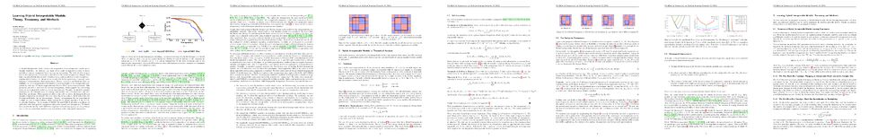

Learning Hybrid Interpretable Models: Theory, Taxonomy, and Methods
Julien Ferry · Gabriel Laberge · Ulrich Aïvodji
Video
Paper PDF

Abstract
A hybrid model involves the cooperation of an interpretable model and a complex black box. At inference, any input of the hybrid model is assigned to either its interpretable or complex component based on a gating mechanism. The ratio of data samples sent to the interpretable component is referred to as the model transparency. Despite their high potential, Hybrid Interpretable Models remain under-studied in the interpretability/explainability literature. In this paper, we remedy this fact by presenting a thorough investigation of such models from three perspectives: Theory, Taxonomy, and Methods. First, we highlight the potential generalization benefits of sending samples to an interpretable component by deriving a Probably-Approximately-Correct (PAC) generalization bound. This guarantee indicates a sweet spot for optimal transparency, which suggests that redirecting inputs to an interpretable model can act as regularization. Secondly, we provide a general taxonomy for the different ways of training such models: the Post-Black-Box and Pre-Black-Box paradigms. These approaches differ in the order in which the interpretable and complex components are trained. We show where the state-of-the-art Hybrid-Rule-Set and Companion-Rule-List fall in this taxonomy. Thirdly, we implement the two paradigms in a single method: HybridCORELS, which extends the CORELS algorithm to Hybrid Interpretable Modeling. By leveraging CORELS, HybridCORELS provides a certificate of optimality of its interpretable component and precise control over transparency. We finally show empirically that HybridCORELS is competitive with existing approaches and performs just as well as a standalone black box (or even better) while being partly transparent.